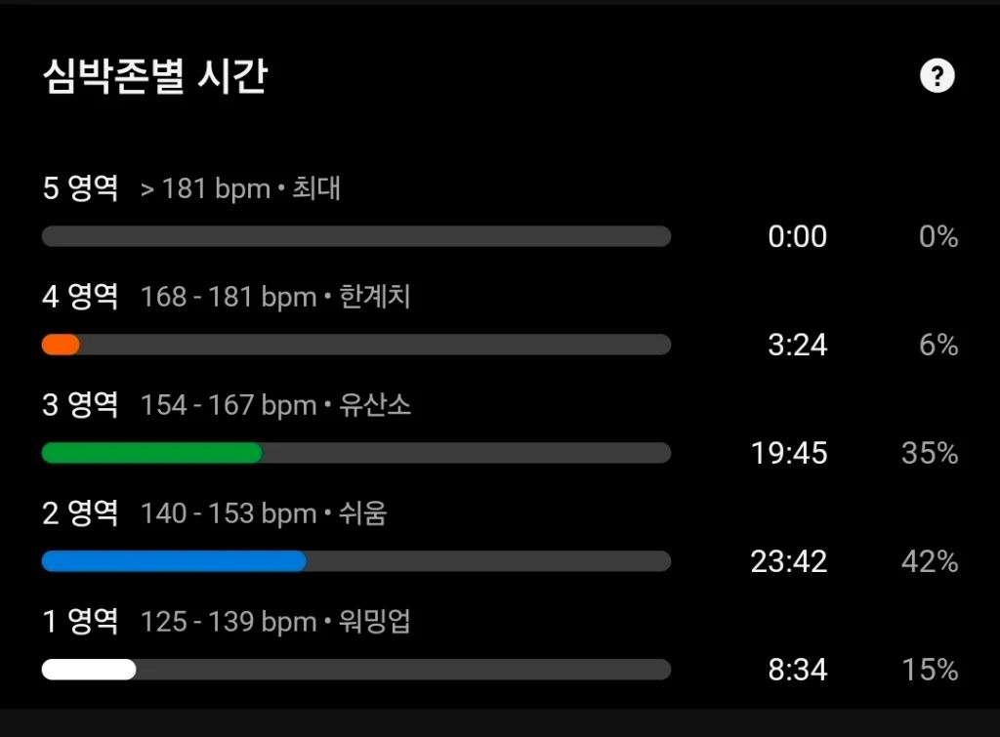

천천히 뛰어야 오히려 빨라지는 이유: 숨이 차지 않는 존 2 달리기
- 매번 숨이 턱 끝까지 차게 뛰면 다리 피로만 빨리 쌓이고 오래 달리는 기초 체력이 잘 늘지 않습니다.
- 존 2(최대 심박수의 60~70%) 달리기는 지방을 연료로 쓰는 몸속 발전소(미토콘드리아)의 크기와 개수를 크게 늘려줍니다.
- 옆 사람과 대화할 수 있는 편안한 속도로 전체 훈련의 80%를 채우면, 3개월 뒤 같은 심박수에서도 훨씬 더 빠르게 달릴 수 있습니다.
1. "달릴 때마다 숨이 턱 끝까지 차야 운동이 된다?" 흔한 오해
많은 분들이 달리기를 할 때 '숨이 차서 헉헉거리고 온몸이 땀으로 젖어야 제대로 운동했다'고 생각합니다.
하지만 케냐나 에티오피아의 세계적인 마라톤 선수들의 훈련을 살펴보면 정반대입니다. 전체 달리는 시간의 80% 이상을 옆 사람과 편하게 대화할 수 있는 느린 속도(존 2)로 달립니다.
매일 심박수를 높여 숨을 헐떡이며 달리면 심장과 몸에 피로가 계속 쌓여 몇 달 만에 기록이 멈추거나 부상으로 달리기를 쉬게 됩니다.
2. 천천히 뛰어야 지방을 태우는 튼튼한 엔진이 만들어집니다
우리 근육 세포 안에는 산소와 지방을 이용해 오래 달릴 에너지를 만들어내는 작은 발전소인 미토콘드리아가 있습니다.
운동 전문가들의 연구에 따르면, 심박수가 너무 높지 않은 존 2 구간으로 달릴 때 이 발전소의 개수와 성능을 늘리는 신호가 가장 활발하게 나옵니다.
반면 속도를 조금만 올려 숨이 가빠지면 몸이 지방 대신 탄수화물을 급하게 태우면서 피로 물질이 쌓여 지방을 태우는 힘이 멈춰버립니다. 즉, 천천히 달려야만 지치지 않고 오래 달리는 튼튼한 유산소 엔진이 만들어집니다.
3. 내 몸에 딱 맞는 존 2 심박수 찾는 법
스마트워치에 자동으로 나오는 '220 - 나이' 공식은 사람마다 차이가 커서 잘 맞지 않을 때가 많습니다.
실제로 가장 쉽고 정확한 기준은 '말하기 테스트'입니다. 뛰면서 코로만 숨을 쉴 수 있거나, '애국가 1절을 숨이 끊기지 않고 말할 수 있는 정도'가 딱 알맞은 존 2 속도입니다.
심박수로 보면 안정 심박수를 반영한 계산 기준으로 약 60~70% 구간이며, 보통 35세 성인 기준 약 130~142 정도에 해당합니다.
4. 실전 80:20 비율: 지치지 않고 빨라지는 황금 비율
스포츠 과학자 스티븐 세일러 교수가 밝혀낸 오래 달리기 선수들의 황금 비율은 80:20 법칙입니다.
일주일 동안 달리는 시간 중 80%는 존 2의 편안한 속도로 채워 모세혈관과 기초 체력을 촘촘하게 키웁니다.
그리고 나머지 20%(일주일에 1번 정도)만 빠르게 뛰는 훈련을 합니다. 이 80:20 원칙을 3개월만 꾸준히 지키면, 예전에는 140 심박수로 1km를 6분에 뛰던 사람이 똑같은 140 심박수로 5분 20초에 가볍게 달릴 수 있게 됩니다.
아래 사진은 필자가 46분 동안 실제로 밖에서 달린 가민 워치 심박 구간별 시간 기록입니다. 숨이 많이 차는 고강도 존 4는 전체의 6%(3분 24초)뿐이고, 존 2(42%, 23분 42초)와 존 3(35%, 19분 45초)에 전체 시간의 77% 이상을 썼습니다. 이렇게 편안한 구간에서 시간을 꾸준히 쌓아야 심장이 한 번에 더 많은 피를 보내고, 마라톤 30km 이후에도 쉽게 지치지 않는 체력이 완성됩니다.

내 실력에 딱 맞는 4대 훈련 페이스를 알고 싶다면?
RunAnalyz 분석 엔진이 내 최근 기록을 바탕으로 부상 없는 조깅 속도부터 템포런, 인터벌 페이스를 1초 만에 무료 처방해 드립니다.
⚡ 내 맞춤 Zone 2 심박수 & 조깅 페이스 진단하기⚡ 내 기록에 딱 맞는 5대 훈련 페이스는?
지금 5k, 10k 또는 하프 기록을 입력하면 나만의 조깅(E)·마라톤(M)·템포런(T)·인터벌(I) 페이스와 VDOT이 1초 만에 자동 계산됩니다.
⚡ 1초 VDOT 페이스 & 완주 예측 계산기 실행하기 ›